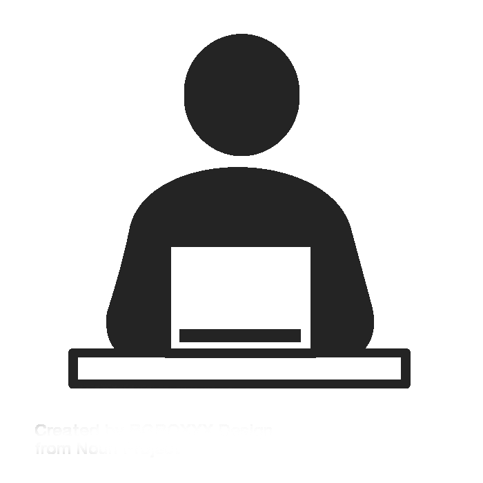

Project details
Overview: Feb. 2019 - Apr. 2019 (3 months) | Team of 4 | YFP link | Redesign link
Tools: Adobe Photoshop | Adobe XD | HTML5 | CSS
Background
The motivation behind this project was for one of my second-year classes, where teams of four worked together to redesign and develop a website for a local organization. Luckily, one of my friends runs an initiative, Young Funds Program (YFP), and was looking to revamp the website. YFP aims to develop financial literacy amongst young adults through offering services, such as workshops and personal consultation.
Distribution of work
We individually completed a critique of the current website,
wireframes, and presented our recommendations to one another
for feedback. After sharing and discussing our findings in
terms of usability, design, and content, we split into
pairs.
Nish and Sakksham were responsible for creating the final
wireframes, deciding design aspects (font and color pallet),
and creating the final presentation.
Gina and I split leadership over the project, finalized the
prototype for development, and developed the site using
HTML/CSS and bits of Javascript.
Process
|  | ||||||||||
| Selecting company | Assessing website | Deciding roles | Meeting with YFP | Identifying pain points | Individual wireframes | Feedback and final wireframes | Iteration | Final prototype | Development | Presentation |
Main pain points:
- Navigation difficulties:the main feedback we received was that it’s difficult to navigate through the site as information was scattered all over the page and call to action items were unclear as it looked like paragraph text. Users also noted that the menu included too many links, making it difficult for the user to quickly access what they need.
- Content disorganization: students found that it was difficult to understand the purpose of the website due to a lack of hierarchy between groups of contents. Additionally, there weren’t clear headings or spacing between different sections of content, making it difficult for the user to understand the message YFP is trying to convey.
- Overall aesthetics: there was a lack of consistency throughout the site and the use of purple and green clashed. Furthermore, the use of animations didn’t add to the design, instead it was distracting. Overall, the site didn’t appear to be very professional.
 Name: Charles | Age: 20
Name: Charles | Age: 20
User Story:
Charles has always been fascinated about the idea of investing however, has little to no idea of what the term ‘investing’ entails nor does he know how to start.
He attends one of YFP’s on-campus introductory events and is interested in learning more about the initiative.
Goals: understand the world of investing, the different types of investments and brokages available to him, and fund his account.
Frustrations: unsure where to start, doesn’t have time to do plenty of research, and worried about losing money.
In a rush? View the final deliverable here
The design process
Ideation
Working closely with Travis allowed us to get a good understanding of how to successfully cater the redesign to the target audience while keeping in mind of the organization’s main goal of increasing their impact and client base.
YFP mainly targets young adults who, according to a HubSpot article, typically spend less than 15 seconds on the website.
Therefore, my goals were to redesign the site on getting the purpose, service offerings, and organization’s goal across as quick and seamless as possible.
To do this I focused on three main aspects:
- Clear understand of organization by establishing hierarchy between content blocks using consistent heading styles and displaying the key takeaways on the scrollable mainpage, where users can click to learn more if interested.
- Increase click-through rate and engagementusing clear call-to-action buttons in each content block and including a “connect with us” button at the bottom of the page, to sustain user engagement.
- Establish a professional brand imagethrough site redesign design by researching the common layout, styles, and popular UI themes between financial and educational service websites.
Prototype v1
Wireframes
After reviewing each other’s wireframes, Nish and Sakksham collaborated to combine the best aspects of everyone's wireframes into one.

Usability: As we cleaned up the footer by removing irrelevant links, we also adopted a modern business card style to the footer, which included social media links. Nish wanted to ensure that the social media links were included on every page to maximize social media traffic. We all felt that the navigation bar had far too many links and worked to downsize the number of links.
The challenge: We all agreed that the content had to be reorganized, however, it was difficult to find a middle ground between functionality (ie. user engagement through sign ups) and design (ie. color scheme) as we had our own opinions. To resolve this, we each explained our perspectives, left it up to Nish and Sakksham to design as roles were previously determined, and gave continuous feedback.
Final Prototype
Final wireframes and development
After reviewing the wireframes, I suggested we add padding between content blocks to make it appear less clustered and divert from using neon greens as it appears more playful rather than professional. Taking into consideration of mine and Gina’s suggestions, Nish and Sakksham iterated on the final prototype.
Reflection
Although we had a good understanding of YFP’s mission, goals, and offerings, more communication could have occurred between the team and Travis. By having Travis apart of the design process, we could have filtered the content to be catered more towards what YFP prefers. After all, maybe we decided to not include information that YFP might have thought to be vital to their organization. Additionally, due to the scope of the project, we only went through a few rounds of iterations, therefore plenty of usability/UI issues might have been overseen. For example, buttons and submission forms should be kept consistent throughout the site.
Next steps
Go mobile: I definitely think to develop a mobile version of the site would be extremely beneficial to YFP as the majority of the target audience browse information on their phones more often than desktops.
Testing: analyzing how users actually engage and navigate through the site will validate whether the chosen layout and organization of information is sustainable or not.
Benchmark study: tracking the conversions between impressions and sign-ups of the new site when compared to the existing site would also be a good indicator of the successfulness of the redesign.
Improvements:
Design: gradients are currently a popular UI trend that YFP can take advantage of. Instead of simply using green to highlight call-to-actions or key messages, a gradient from the previous neon green to the current forest green can be used. Usability: using jQuery to add a popup box for users to subscribe or connect with YFP would increase the probability of getting sign-ups from users as well as help users understand that the site wants to connect with them. Additionally, including popups for all "sign-up" buttons would prevent the user from having to take an additional step in getting connected. Content: the current redesign uses plenty of stock photos, which can potentially give off an untrustworthy vibe to the user. We could have reached out to Travis for first-hand photos or other media content, which would help build the brand as well.